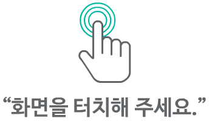

<!DOCTYPE html>
<html>
<head>
<!-- 기본 문서 설정 -->
<meta http-equiv="Content-Type" content="text/html; charset=UTF-8" />
<meta http-equiv="X-UA-Compatible" content="IE=edge" />
<title>직장인의 품격! 직무윤리 메시지</title>

<!-- 반응형 웹을 위한 뷰포트 설정 -->
<meta name="viewport" content="width=device-width, initial-scale=1.0, maximum-scale=2.0, minimum-scale=1.0,user-scalable=yes" />
<link rel="shortcut icon" href="#">

<!-- 페이지 데이터와 스크립트 데이터 로드 -->
<script type="text/javascript" src="js/pageData.js"></script>
<script type="text/javascript" src="js/scriptData.js"></script>
    
<!-- UI 스타일시트 로드 -->
<link rel="stylesheet" type="text/css" href="../common/css/contentsUI.css">
<link rel="stylesheet" type="text/css" href="../common/css/jquery.mCustomScrollbar.css">

<!-- jQuery 라이브러리 로드 -->
<script type="text/javascript" src="../common/js/jquery1.11.2/jquery.min.js"></script>
<script type="text/javascript" src="../common/js/jquery1.11.2/jquery-ui.min.js"></script>

<!-- 추가 jQuery 플러그인 로드 -->
<script type="text/javascript" src="../common/js/jquery.cookie.js"></script>
<script type="text/javascript" src="../common/js/touchpunch/jquery.ui.touch-punch.js"></script>
<script type="text/javascript" src="../common/js/jquery.mCustomScrollbar.concat.min.js"></script>
<script type="text/javascript" src="../common/js/gsap.min.js"></script>

<!-- 공통 기능 스크립트 로드 -->
<script type="text/javascript" src="../common/common.js"></script>

<!-- 기능별 스크립트 로드 -->
<script type="text/javascript" src="../common/js/cookie.js"></script>
<script type="text/javascript" src="../common/js/index.js"></script>
<script type="text/javascript" src="../common/js/sliderEvent.js"></script>
<script type="text/javascript" src="../common/js/makeUI.js"></script>
<script type="text/javascript" src="../common/js/leftMenu.js"></script>
<script type="text/javascript" src="../common/js/video.js"></script>
<script type="text/javascript" src="../common/js/audio.js"></script>
<script type="text/javascript" src="../common/js/bookMark.js"></script>
<script type="text/javascript" src="../common/js/popup.js"></script>
<script type="text/javascript" src="../common/js/studyPop.js"></script>
<script type="text/javascript" src="../common/js/examplePop.js"></script>
<script type="text/javascript" src="../common/js/practicePop.js"></script>

<!-- 제목 결정 js확인 테스트 스크립트 -->
 <script>
  var titleName = "직장인의 품격! 직무윤리 메시지";
  console.log("현재 제목 변수:", titleName);
  document.title = titleName;
  
  // 페이지 로드 완료 후에도 타이틀 재설정
  window.addEventListener('load', function() {
    document.title = "직장인의 품격! 직무윤리 메시지";
  });
</script>

<!-- 학습정리 관련 파일 로드 -->
<link rel="stylesheet" type="text/css" href="../common/contents/css/summary.css">
<script type="text/javascript" src="../common/contents/js/summary.js"></script>

<!-- 로딩 및 자동 재생을 위한 스크립트 -->
<script type="text/javascript">
    // 페이지 로드 시 실행되는 초기화 함수
    document.addEventListener('DOMContentLoaded', function() {
        // 로딩 화면 표시
        gsap.set("#loadingPop", {display: "flex"});
        
        // 비디오 요소 가져오기
        var video = document.getElementById('video');
        
        // 비디오 메타데이터가 로드되면 실행
        video.addEventListener('loadedmetadata', function() {
            // 로딩 화면을 1초 동안 보여준 후 페이드아웃
            setTimeout(function() {
                gsap.to("#loadingPop", {
                    opacity: 0,
                    duration: 0.3,
                                            onComplete: function() {
                            $("#loadingPop").hide();
                            startVideo();  // 자동재생 활성화
                            // showPlayButton();  // 재생 버튼 표시 비활성화
                        }
                });
            }, 1000);
        });


        // [2025-08-07 15:00] PC 및 모바일에서 바로 소리가 나오도록 개선
        // 브라우저 환경 감지 함수
        function isMobileDevice() {
            return /Android|webOS|iPhone|iPad|iPod|BlackBerry|IEMobile|Opera Mini/i.test(navigator.userAgent);
        }
        
        // 비디오 재생 함수 - PC 및 모바일 즉시 소리 재생
        function startVideo() {
            if (video) {
                // 볼륨 설정
                video.volume = 1.0;
                
                // [2025-08-07 15:00] 브라우저 환경에 따른 음소거 설정
                if (isMobileDevice()) {
                    // 모바일 환경: 자동재생 정책을 위해 초기 음소거
                    video.muted = true;
                    console.log("모바일 환경 감지 - 초기 음소거 설정");
                } else {
                    // PC 환경: 즉시 소리 활성화
                    video.muted = false;
                    console.log("PC 환경 감지 - 즉시 소리 활성화");
                }
               
                // 자동 재생 시도
                var playPromise = video.play();
                
                if (playPromise !== undefined) {
                    playPromise.then(function() {
                        // 재생 성공
                        console.log("비디오 재생 시작");
                        
                        // [2025-08-07 15:00] PC 환경에서는 즉시 소리 활성화
                        if (!isMobileDevice()) {
                            video.muted = false;
                            console.log("PC 환경 - 즉시 소리 활성화 완료");
                        }
                        
                        // [2025-08-07 15:00] 음소거 버튼 이벤트 리스너 개선
                        $("#muteBtn").off("click").on("click", function() {
                            video.muted = !video.muted;
                            console.log("음소거 상태:", video.muted);
                        });
                        
                        // [2025-08-07 15:00] 모바일 환경에서만 사용자 상호작용 시 소리 활성화
                        if (isMobileDevice()) {
                            function enableAudio() {
                                if (video.muted) {
                                    video.muted = false;
                                    console.log("모바일 환경 - 사용자 상호작용으로 소리 활성화");
                                }
                                // 이벤트 리스너 제거 (한 번만 실행)
                                $(document).off("click touchstart", enableAudio);
                            }
                            
                            // 클릭과 터치 이벤트 모두 감지
                            $(document).on("click touchstart", enableAudio);
                        }
                        
                        // [2025-08-07 15:00] 비디오 재생 상태 모니터링 추가
                        video.addEventListener('playing', function() {
                            console.log("비디오 재생 중 - 볼륨:", video.volume, "음소거:", video.muted, "환경:", isMobileDevice() ? "모바일" : "PC");
                        });
                        
                    }).catch(function(error) {
                        // 재생 실패 시 수동 재생 버튼 표시
                        console.log("자동 재생 실패:", error);
                        $("#playBtn").show();
                        $("#pauseBtn").hide();
                    });
                }
            }
        }

        // 재생 버튼 표시 함수 추가
        function showPlayButton() {
            // mPop.png 이미지를 표시하는 요소 생성
            // [2024-06-07 15:00] mPop.png 관련 기능 비활성화 - 요청에 따라 주석 처리
            /*
            var playButton = document.createElement('div');
            playButton.id = 'playButton';
            playButton.innerHTML = '';
            playButton.style.cssText = 'position: absolute; top: 50%; left: 50%; transform: translate(-50%, -50%); z-index: 1000;';
            document.getElementById('videoCtn').appendChild(playButton);
            // 클릭 이벤트 추가
            playButton.addEventListener('click', function() {
                this.style.display = 'none';  // 버튼 숨기기
                startVideo();  // 비디오 재생 시작
            });
            */
        }
    });
</script>

<style>
html, body {
  height: 100%;
  margin: 0;
  padding: 0;
}

   body {
       background-color: #156082;
       margin: 0;
       padding: 0;
       width: 100%;
       height: 100vh;
       overflow: hidden;
   }

    #Container {
      height: 100dvh; 
    }

   #contentsCtn {
       width: 100%;
       height: 100%;
       margin: 0;
       padding: 0;
       position: relative;
       background-color: #156082;      
   }

    #videoCtn {
      width: 100%;
      height: 100dvh;
      position: relative;
      display: flex;
      justify-content: center;
      align-items: center;
      background-color: #156082;
    }

    video {
      width: 100%;
      height: 100%;
      object-fit: cover; /* 또는 contain */
    }

@media screen and (max-width: 768px) {
    #videoCtn {
        aspect-ratio: 16 / 9;
        padding: 0;
    }

    video {
        width: 100%;
        height: auto;
    }

    #playButton img {
        max-width: 120px;
    }

    .bottomMenu {
        flex-direction: column;
        font-size: 14px;
    }

    /* 필요 시 메뉴 버튼 숨기기 */
    #treeMenu, .topMenu {
        display: none;
    }
}

   
/* 로딩 화면 스타일 */
#loadingPop {
    position: fixed;
    top: 0;
    left: 0;
    width: 100%;
    height: 100%;
    background-color: #fff;
    z-index: 9999;
    display: flex;
    justify-content: center;
    align-items: center;
}

#loadingImg {
    width: 100px;
    height: 100px;
    background: url('img/loading.png') no-repeat center center;
    background-size: contain;
    animation: rotate 1s linear infinite;
}

/* 로딩 이미지 회전 애니메이션 */
@keyframes rotate {
    from { transform: rotate(0deg); }
    to { transform: rotate(360deg); }
}

/* 재생 버튼 스타일 추가 */
#playButton {
    position: absolute;
    top: 50%;
    left: 50%;
    transform: translate(-50%, -50%);
    z-index: 1000;
    cursor: pointer;
}

#playButton img {
    max-width: 200px;
    height: auto;
}

/* [2024-12-19] LS 오토모티브 CI 이미지 스타일 추가 - 동영상 플레이어 바로 위 중앙 배치 */
#lsCiImage {
    position: absolute;
    top: 20px; /* 동영상 플레이어에서 약간 위쪽 */
    left: 50%;
    transform: translateX(-50%);
    z-index: 1001; /* 동영상 위에 표시되도록 높은 z-index */
    max-width: 200px;
    height: auto;
    pointer-events: none; /* 이미지 클릭 방지 */
}

/* 모바일 반응형을 위한 CI 이미지 크기 조정 */
@media screen and (max-width: 768px) {
    #lsCiImage {
        max-width: 150px;
        top: 15px;
    }
}


.viewer-container {
  width: 100%;
  height: 100%;
  aspect-ratio: 16/9;
  max-height: 100%;
}
</style>

</head>

<body style="background-color: #156082; margin: 0; padding: 0; overflow-x: hidden;">
    <div id="Container" style="background-color: #156082; margin: 0; padding: 0; padding-bottom: 30px;"> <!-- 20250604 제이제이 : padding-bottom 추가 -->
        <div id="contentsCtn" style="background-color: #156082; margin: 0; padding: 0;">
            <!-- [2024-12-19] LS 오토모티브 CI 이미지 추가 - 동영상 플레이어 바로 위 중앙 배치 
            <div id="lsCiImage">
                
            </div> -->
            
            <!-- 비디오 플레이어 영역 -->
            <div id="videoCtn" style="background-color: #156082; margin: 0; padding: 0;"> 
                <!-- 비디오 요소: 미리 로드하고 인라인 재생 설정 -->
                <video playsinline id="video" preload="auto" style="background-color: #156082;"> </video> 
            </div>
            
            <!-- 팝업 비디오 영역 -->
            <div id="popupVideoCtn"> 
                <div id="popupVideo_bg"></div>
                <video playsinline id="popupVideo" preload="none"> </video>
                <div id="popupVideoSync"><div id="popupVideoSyncText"></div></div>
                <div id="popupVideo_closeBG"></div>
                <div id="popupVideo_closeBtn"></div>
            </div>

            <!-- 상단 메뉴 영역 -->
            <div class="topMenu">
                <div id="lec"></div>
                <div id="chasi_titleBG"></div>
                <div id="chasi_titleText"></div>
            </div>
            
            <!-- 좌측 트리 메뉴 영역 -->
            <div id="treeMenu" style="display:none">
                <div id="menuCtn"></div>
                <div id="bookMarkCtn"></div>
                <div id="menuTapeBtn"></div>
                <div id="bookMarkTapeBtn"></div>
                <div id="menuCloseBtn"></div>
            </div>
            
            <div id="menuMask"></div>

            <!-- 스크립트 표시 영역 -->
            <div id="scriptCtn">
                <div id="scriptBG"></div>
                <div id="closeScript"></div>
                <div id="scriptText"></div>
            </div>
            <div id="bookMark_savePop"></div>

            <!-- 하단 커스텀 UI/UX 컨트롤 바 (원본 유지) -->
            <div class="bottomMenu">
                <div id="line_grup"></div>
                <div id="discussBtn"></div>
                <div id="memoBtn"></div>
                <div id="questionBtn"></div>
                <div id="learningBtn"></div>				
                <div id="timeText"></div>
                <div id="playBtn"></div>
                <div id="pauseBtn"></div>
                <div id="reBtn"></div>
                <div id="fullScreenBtn"></div>
                <div id="rateBtn"></div>
                <div id="rate_popCtn"></div>
                <div id="muteBtn"></div>
                
                <div id="prevBtn"></div>
                <div id="nextBtn"></div>
                <div id="pageText">
                    <div id="pageDot"></div>
                    <div id="cPage"></div>
                    <div id="tPage"></div>
                </div>
                
                <!-- 재생 진행바 -->
                <div class="control-slider"> <div id="slider"></div> </div>
                <div id="sliderArea"></div>
                <div class="vol_control-slider"> <div id="vol_slider"></div> </div>
            </div>
            
            <!-- 팝업 컨테이너 영역 -->
            <div id="learningPopCtn"></div>
            <div id="studyPopCtn"></div>
            <div id="examplePopCtn"></div>
            <div id="practicePopCtn"></div>

            <!-- 오디오 플레이어 -->
            <audio id="audioCtn"></audio>
        </div>

        <!-- 모바일 이전/다음 버튼 -->
        <div id="mPrevBtn"></div>
        <div id="mNextBtn"></div>
        
        <!-- 로딩 화면 -->
        <div id="loadingPop"> 
            <div id="loadingImg"></div> 
        </div>		
        
        <!-- 효과음 및 배경음악 -->
        <audio class='effect_snd'></audio>
        <audio loop class='bgm_snd'></audio>
    </div>
	<script>
    // [2025-08-07 14:50] 동영상 진행바 드래그 방지 및 다음 버튼 제어 기능 구현
    // 비디오와 컨트롤 요소들을 가져오기
    const video = document.getElementById('video');
    const slider = document.getElementById('slider');
    const nextBtn = document.getElementById('nextBtn');
    const mNextBtn = document.getElementById('mNextBtn'); // 모바일 다음 버튼

    // 페이지가 로드되면 실행
    document.addEventListener('DOMContentLoaded', function() {
        // [2025-08-07 14:50] 1. 슬라이더 드래그 완전 비활성화
        slider.style.pointerEvents = 'none';  // 슬라이더 클릭/드래그 비활성화
        slider.style.cursor = 'default';      // 커서 스타일 변경
        
        // [2025-08-07 14:50] 2. 비디오 재생 중 슬라이더 자동 업데이트
        video.addEventListener('timeupdate', function() {
            // 현재 재생 시간을 백분율로 계산
            const percentage = (video.currentTime / video.duration) * 100;
            // 슬라이더 값 업데이트
            slider.value = percentage;
            
            // [2025-08-07 14:50] 실시간으로 다음 버튼 상태 업데이트
            updateNextButton();
        });

        // [2025-08-07 14:50] 3. 다음 버튼 제어 함수 개선
        function updateNextButton() {
            if (video.currentTime < video.duration) {
                // 비디오가 끝나지 않았을 때 - 다음 버튼 비활성화
                nextBtn.style.pointerEvents = 'none';  // 클릭 비활성화
                nextBtn.style.opacity = '0.5';         // 시각적으로 비활성화 표시
                nextBtn.style.cursor = 'not-allowed';  // 커서 스타일 변경
                
                // [2025-08-07 14:50] 모바일 다음 버튼도 동일하게 비활성화
                if (mNextBtn) {
                    mNextBtn.style.pointerEvents = 'none';
                    mNextBtn.style.opacity = '0.5';
                    mNextBtn.style.cursor = 'not-allowed';
                }
                
                console.log("동영상 재생 중 - 다음 버튼 비활성화");
            } else {
                // 비디오가 끝났을 때 - 다음 버튼 활성화
                nextBtn.style.pointerEvents = 'auto';  // 클릭 활성화
                nextBtn.style.opacity = '1';           // 시각적으로 활성화 표시
                nextBtn.style.cursor = 'pointer';      // 커서 스타일 변경
                
                // [2025-08-07 14:50] 모바일 다음 버튼도 동일하게 활성화
                if (mNextBtn) {
                    mNextBtn.style.pointerEvents = 'auto';
                    mNextBtn.style.opacity = '1';
                    mNextBtn.style.cursor = 'pointer';
                }
                
                console.log("동영상 재생 완료 - 다음 버튼 활성화");
            }
        }

        // [2025-08-07 14:50] 4. 비디오 로드 완료 후 초기 상태 설정
        video.addEventListener('loadedmetadata', function() {
            updateNextButton(); // 초기 상태 설정
        });

        // [2025-08-07 14:50] 5. 비디오 재생/일시정지 시 다음 버튼 상태 업데이트
        video.addEventListener('play', function() {
            updateNextButton();
        });

        video.addEventListener('pause', function() {
            updateNextButton();
        });

        // [2025-08-07 14:50] 6. 비디오 종료 시 다음 버튼 활성화
        video.addEventListener('ended', function() {
            updateNextButton();
        });

        // [2025-08-07 14:50] 7. 슬라이더 영역 클릭/드래그 이벤트 완전 차단
        const sliderArea = document.getElementById('sliderArea');
        if (sliderArea) {
            sliderArea.style.pointerEvents = 'none';
            sliderArea.style.cursor = 'default';
            
            // 추가 이벤트 차단
            sliderArea.addEventListener('mousedown', function(e) {
                e.preventDefault();
                e.stopPropagation();
                return false;
            });
            
            sliderArea.addEventListener('touchstart', function(e) {
                e.preventDefault();
                e.stopPropagation();
                return false;
            });
        }
    });
    </script>
</body>
</html> 